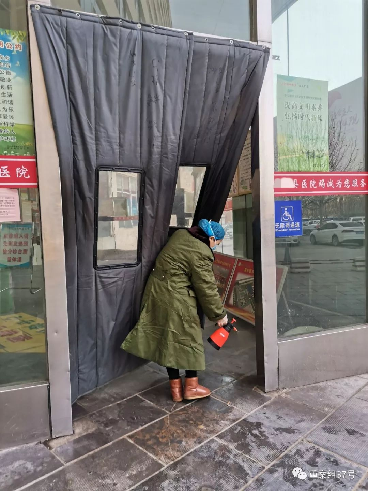
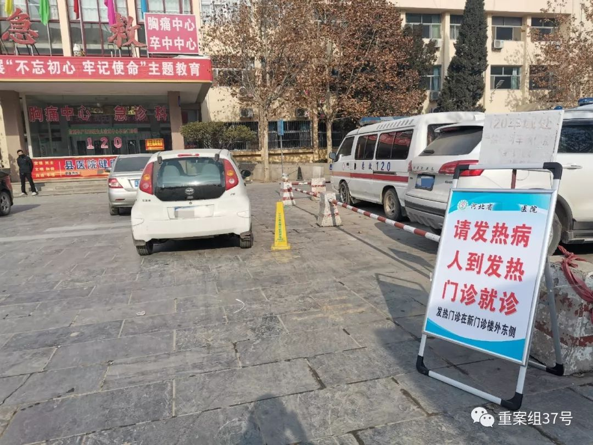
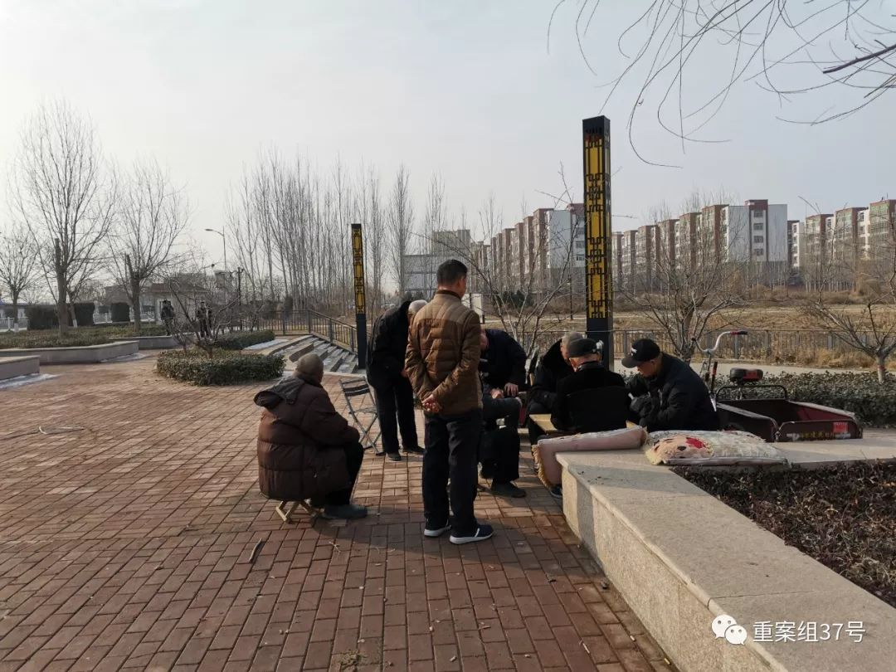

一个河北县城的防疫：建成隔离病区，医护缺乏专业口罩
原文链接 备份链接 ********** *****春节期间，街边摆摊卖走亲戚用礼品盒的越来越少，仅有的几个摊主都戴着口罩。**********一位摊主介绍：**********“今年来买东西的少了，路上的人也少了。**********” …

春节期间，街边摆摊卖走亲戚用礼品盒的越来越少，仅有的几个摊主都戴着口罩。一位摊主介绍：“今年来买东西的少了，路上的人也少了。”说完话，他下意识紧了紧鼻头的口罩。
全文3623字，阅读约需7分钟
距离武汉900公里的河北故城县，从县一级领导干部到各乡镇、农村干部，2020年春节明显忙了起来。
1月27日，大年初三，县委书记到新建的隔离病区视察。县卫健委春节不再休假，成立专门的防控办公室应对此次疫情。
当地县医院设置了发热门诊，但仍有发热病人不戴口罩。春节期间，当地几乎没有走亲访友的拜年活动，电话拜年成为主流，街道上少有行人，人们都很重视这次疫情，闭门不出。

▲1月25日，县医院医护人员正在拿消毒液在门诊楼门帘上喷洒。 新京报记者 韩茹雪 摄
━━━━━
官方：当地隔离病区开建，县委书记视察
故城县位于河北省东南部，与山东省交界，与疫情中心武汉市相距900公里。依靠发达的交通脉络，春运大潮下进出的务工人员来来往往。
一场防疫战在这个小城展开。
春节期间，故城县的一个隔离病区建设完毕。隔离病区位于县城边缘的营东开发区内，原是县医院的一个分院，本准备做医养中心。1月26日，十几个工人正在隔离病区里面忙碌。工作人员介绍称，该病区内原本就是按医院准备的，目前没有开始运营，还在建设阶段，预计当天晚上完成建设。
1月25日，县长来到营东隔离病区建设现场，对县医院提出“做好持久战准备，落实防控物资储备”的要求。1月27日，县委书记前往营东隔离病区检查指导。
整个春节，县卫健委都不休息，成立了专门的防控办公室，统计上报辖区内武汉返乡人员、发热病人等相关疫情数据。
疫情防控自上而下，赶在1月25日，正月初一之前落实到了基层。每个乡镇、村庄都通过广播形式进行了相关宣传，很多村镇在关键路口设置障碍“封村”，不允许外人进入。
县城里一所规模较大的养老院，平时有50位左右老人，过年期间有十几个老人留守在养老院。大年三十还允许家属探望，到了初一就严格防控疫情，不允许外人进入。
当地多家药店，均出现口罩短缺与涨价现象。一家大型药店店员称，店内库存的一次性口罩在23日就已经断货，上游企业是位于衡水市的一家批发商，那里也没有货了。另有一位连锁药店员工表示，26日刚进了一批口罩，目前只有带滤芯的棉布口罩，上午还卖16元一个，晚上8点已经涨价到18元一个，“明天更贵，要卖20多块钱一个。”
春节期间，街边摆摊卖走亲戚用礼品盒的越来越少，仅有的几个摊主都戴着口罩。一位摊主介绍：“今年来买东西的少了，路上的人也少了。”说完话，他下意识紧了紧鼻头的口罩。

▲1月25日，县医院门口处，醒目位置标注有发热门诊位置及路线。 新京报记者 韩茹雪 摄
━━━━━
医院：一次性口罩为多数医护防护装备
1月25日，大年初一，也是河北省启动一级响应的第2天。故城县医院门口醒目位置立着指示牌，“请发热病人到发热门诊就诊”。这所医院是二级甲等医院，也是全县乃至全市唯一一家全国百佳医院。
这所医院春节期间在岗的医生，不少是因为疫情临时抽调轮班。对于他们而言，一次性口罩仍是多数人能拿到的防护装备，更好一点的，是戴两层。
急诊科的一位医生表示，医院的口罩给医护人员都不够用，遇见发热病人，会给他们戴口罩，但也不是专业口罩，只有普通的一次性口罩。该医院包括收费处、药品发放处等多科室医生仅佩戴一次性口罩，有些医生会戴两层口罩。一名医生表示：“没有专业口罩。”
该医院分诊台医生介绍，目前，负责测量体温的医生，戴的是医用外科口罩；发热门诊与呼吸内科的医生，戴的是N95口罩，其他科室医生，戴的都是普通的一次性口罩。
赵丽丽在发热门诊值班，她负责治疗发热病人的第一道程序——测量体温。她戴着护目镜与医用外科口罩，介绍道，她们这里是8小时轮班，24小时都有医护人员在发热门诊值班，没有空岗的时候。发热门诊的医生都会佩戴医用外科口罩与护目镜。针对此次疫情，已经建了隔离病房，确诊的话就送往所在市的定点医院。
对于来测量体温的病人，赵丽丽会询问姓名、住址与联系方式，还会问到是否从外地回来、家里有没有外地回来的人、是否有从武汉回来的家人。像赵丽丽所在的诊台，医院设有两个，南北两栋门诊楼各一个，负责医生面前都摆着厚厚的一个登记本。
急诊科有三位医生坐诊。下午两点左右，屋里有四五位病人，均有咳嗽、头疼等症状。面对不停进出的病人，急诊处的三位医生仅佩戴口罩，且没有护目镜与防护服，医生自称戴的是普通的一次性口罩，有位医生戴了两层。来看病的人也有少数不佩戴口罩，偶尔听见别人咳嗽，下意识捂住嘴巴。
一位医学领域的专业人士表示，此次新型冠状病毒肺炎有潜伏期即可传播病毒的风险，且存在部分没有发热症状的感染者，在这一情况下，接诊有疑似不适症状患者的医生应该穿戴防护服、N95口罩与护目镜等专业的防护装备。
急诊科医生介绍，在县医院，对于出现不适症状、可能是新型肺炎患者的人，可以进行血常规与肺部CT检查，“但这都不是针对性的”。这家医院没有针对新型肺炎的检测试剂，有疑似病例会送往所在市里的定点医院，该医生推荐没有发热状况的患者居家观察。

▲1月25日，大年初一下午，县医院急诊室有不少因咳嗽、感冒前来就诊的病人，部分病人不戴口罩，听见咳嗽声捂住嘴巴。 新京报记者 韩茹雪 摄
━━━━━
公众：部分就医者防护意识缺乏
疫情之下，前来医院的就诊者是否具有防护意识显得格外重要。
县医院的呼吸内科住院部位于一楼，走到尽头是隔离病房。1月25日，新京报记者看到，呼吸内科的一间病房，里面有好几张病床，气温明显比外面高出几度。躺在床上的老人时不时咳嗽，屋里有十几个人陪护，或坐或站，没人戴口罩。
这座楼的四层是儿童病房，孩子们的哭声与咳嗽声此起彼伏，这一层的病房里，从大人到小孩，几乎没有人戴口罩。
77岁的孙奶奶家住故城县西半屯镇西半屯村，1月25日下午来县医院发热门诊看病，体温37.2℃，医生建议她做血常规与肺CT检查，被她拒绝，理由是，这些检查做下来要大几百块钱，只有住院才能报销，否则要自己支付。
孙奶奶称，老伴正在县医院住院，她要在病房负责照顾，也是因此才来。看完发热门诊，她的手里多了两盒药，一盒是用于止痛、解热的布洛芬片；另一盒是润肺化痰，止咳定喘的芦根枇杷叶颗粒。
孙奶奶不清楚村里有没有从武汉回来的人。陪同她来的孙子今年18岁，正在邻省念书，他知道疫情的事情，但觉得“没事”。祖孙二人，只有奶奶戴着口罩，粉红色的，是发热门诊医生给的，她上下戴反，却浑然不知，孙子干脆没戴口罩，医生也给他了，但他不愿意戴。
很多普通居民防护意识更加欠缺。虽然县城唯一的电影院大门紧闭。但就在电影院不远处的空地，八九位老人围坐在一起打扑克，问及疫情信息，他们都知道大概情况，但照样不戴口罩、聚在一起打牌。

▲1月25日，县城一家电影院挂出通告，因新型肺炎自年三十暂停营业，开业时间待定。 新京报记者 韩茹雪 摄
━━━━━
代际：年轻人与老年人的防疫意识差异
26岁在北京工作的林清，与父亲有关疫情的第一次矛盾发生在商场，那是1月22日，腊月廿八。林清在北京工作，刚回老家不久，和父母一起逛商场买年货。
林清坚持一家人外出商场应该戴口罩，口罩是她在北京买好的。林清的父亲觉得小题大做，怕被熟人认出来“丢人”。父女俩的战争进行了半小时，林清宣告胜利。进了商场才发现，几乎没有戴口罩的人。

▲1月25日，大年初一下午，县城内某小区附近空地上，八九位老人正在打扑克，均没有佩戴口罩。 新京报记者 韩茹雪 摄
疫情的消息什么时候在小城传开，没有确切的时间。1月24日，大年三十，吃团年饭的时候，林清再次提出过年不要到亲戚家走动，不要串门。70多岁的爷爷第一个反对：“即便有病毒，但是我们怎么好意思说出口，亲戚们怎么想咱家，除非政府发文件。”
打开林清手机的同学群，类似的矛盾几乎在每个人身上出现，在小县城里生活的长辈们，没有更多途径获取疫情信息，相应的也没有防护意识。
转折出现在1月25日凌晨，大年初一，林清所在的县城各乡镇、村庄通过大喇叭播报，请大家不要到家中拜年，不要走亲串友。
一位政府工作人员表示，年三十县领导班子开会到深夜10点钟，按照省、市一级要求，加快了宣传工作。当晚散会后，乡镇一级再开工作部署会议，第二天凌晨，落实到各个村子，通知村民不再挨家挨户拜年。
有了明确指示，村里反应很迅速。多个村庄通过拉横幅、挖地沟、堆土、设置专人把守路口等方式，劝阻走亲戚拜年。对于医疗资源相对匮乏的农村来讲，做好隔离是它们切实可行的选择。
年轻一代与上一辈人的矛盾渐渐缓和。春节期间，林清一家最终达成共识，统一和亲戚们电话拜年，不再各处走动。
（应采访对象要求，文中赵丽丽、李梦、林清为化名）
新京报记者 韩茹雪 编辑 郭琛 值班编辑 潘佳锟 校对 李世辉
点击下图进入”全国新型冠状病毒感染肺炎实时地图“

*值班编辑 花木南*


本文部分内容首发自新京报公号“重案组37号”
未经新京报书面授权不得转载使用
欢迎朋友圈分享

原文链接 备份链接 ********** *****春节期间，街边摆摊卖走亲戚用礼品盒的越来越少，仅有的几个摊主都戴着口罩。**********一位摊主介绍：**********“今年来买东西的少了，路上的人也少了。**********” …
原文链接 备份链接 记者/魏晓涵 实习记者/陈威敬 编辑/刘汨 宋建华 孝感市第一人民医院的医生拆下文件袋作为保护面罩 年初三下午5点，王隆和同事在湖北襄阳去往河南新乡的路上，已经连续开了7个小时车。目的地有一家防护服的生产厂，称可以为他 …
原文链接 备份链接 祁立说现在最大的困难，是发热门诊的就诊人数过多。而一线医务工作者最需要的，是能让患者根据规范的指南分级诊疗，减轻发热门诊和隔离病房不必要的压力。整个采访，他没有表达恐慌和焦虑，只希望传递客观、真实、有价值的信息。 记 …
原文链接 备份链接 “疫情”中的安徽马鞍山：医院设发热门诊分诊处、口罩脱销、景点暂停开放 2020-01-25 21:10 作者：夏治斌 石英婧 来源：中国经营网 本报记者 夏治斌 石英婧 马鞍山 上海报道 “今天早上看到（马鞍山）有确诊 …
原文链接 备份链接 武安医生（化名）所在的医院是孝感市三家抗疫医院之一。距离武汉66公里的孝感是距离武汉最近的地级市，截止到1月28日上午，有确诊病例173例。与暴风眼武汉一样，以孝感为代表的武汉周边小城也正在经历着决战时刻。 坐诊之 …